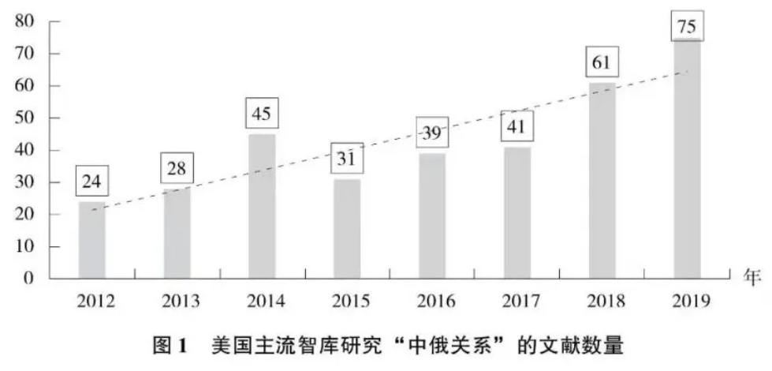
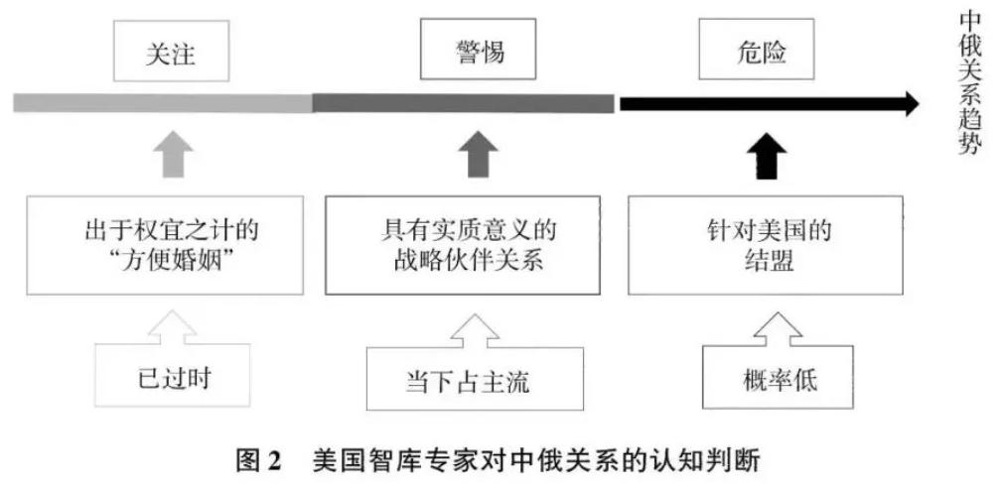

收录于合集

作品简介 ****
作者： 马洪喜，曲阜师范大学中国史博士后流动站。
来源： 《俄罗斯东欧中亚研究》2021年第3期，第58-76页
导读
步入 21世纪的第三个十年，大国之间的竞争态势愈演愈烈。 中美、美俄关系紧张的态势越趋明显，中俄关系则持续升温。 近日，中俄两国元首发表《中俄关于新时代国际关系和全球可持续发展的联合声明》，集中阐述中俄在民主观、发展观、安全观、秩序观方面的共同立场，引发全球关注。有评论认为，这一行动，将对新形势下完善全球治理体系产生重要而深远的影响。
那么，美国会怎么看？ 本文整体梳理和分析了美国知名智库的观点，并指出：在美国精英看来，中俄伙伴关系的进一步拉近，对美国及其盟友与伙伴的利益构成严峻挑战，尤其自2014年乌克兰危机以来中俄关系的加速发展对美国造成了严重影响。作者指出，不同的认知判断意味着不同的战略选择：目前， “中俄提升并加强合作伙伴关系以共同挑战美国利益”的认知，在美国政学各界已经生根， 并且美国判断其自身政策是促进或制约中俄关系的关键因素。接下来美国会如何进一步“遏制”中俄关系并维系自身利益，需要保持高度关注。
本文原载《俄罗斯东欧中亚研究》2021年第3期，原题为《中美战略竞争背景下的中俄关系：美国智库的评估》 ，仅代表作者观点，供诸君思考。
正文
01
问题缘起
十九大闭幕后，中俄两国元首通电话，指出“中国的发展离不开世界，俄罗斯是中国的全面战略协作伙伴， 无论国际风云如何变幻，中国深化中俄关系的决心不会改变”。两国元首一致同意要深化中俄全面战略协作伙伴关系 。
2019年6月，中俄元首决定将两国关系提升为“新时代中俄全面战略协作伙伴关系”，这意味着中俄关系进入更高水平、更大发展的新时代。在美国看来，中俄紧密的合作关系在可预见的未来会保持现状，甚至朝向更加强化的趋势发展，对美国及其盟友的利益形成“严峻挑战”， 正如 2017年12月特朗普政府发布的首份《国家安全战略》报告所指出的，“修正主义国家中国与俄罗斯正在挑战美国的权力、影响力以及利益，并企图损害美国的安全与繁荣” 。
与之相呼应，美国国防部 2018 年 1月出台的《国家防务战略》报告指出：“未来美国的繁荣与安全所面临的主要挑战将来自于与《国家安全战略》中所归类的修正主义国家进行长期的战略竞争，而越来越明晰的是，中国与俄罗斯想要塑造一个与其威权模式相一致的世界，并从中获取对其他国家在经济、外交与安全决策事务方面的否决权。”
此外，美国国会也于近几年展现“对华需要强硬”的姿态。 美国第115届国会于2017年初就率先启动全面重新评估美国对华政策的按钮，2018年8月，美国国会参众两院又通过《2019财年国防授权法案》。以该法案中的相关条款为指导，美国作为“全政府”迈出了对华强硬步伐，并对所谓中国损害美国利益的行为作出回应。同年10月，美国副总统彭斯在美国保守派智库哈德逊研究所就中美关系发表演讲，从贸易、军事、人权以及干预美国中期选举等方面对中国进行全面抨击，让人不禁联想到“冷战”。
2019 年2月特朗普宣布美国将中止履行与苏联在1987年12月签署的《苏联和美国消除两国中程和中近程导弹条约》，而其所依据的理由则是“俄罗斯违反《中导条约》规定，中国却因不是缔约国而拥有超过1000 枚该条约所涵盖范围内的导弹，美国却在俄罗斯违规期间遵守该条约三十多年”。
综上所述，特朗普上任以来美国对华、对俄政策更趋强势，而将中国与俄罗斯置于“战略竞争对手”成为美国对外战略设计与部署的假设前提，特朗普政府的种种对外行为 让人不由猜想美国是否要重新树立“冷战版本”的意识形态 。
02
研究视角的选取
自 2014 年乌克兰危机以来，美俄关系交恶推动俄罗斯转向东方，而自特朗普上任以来，美国调整先前的对华“接触”战略转向以遏制中国发展为主的“脱钩”战略，美国与中国的关系也呈现出交恶态势。中俄关系在多领域的提质升级无疑在很大程度上受到美国因素的助推，而中俄关系的进一步拉近反过来又引起美国警惕，正如美国前国家情报委员会情报官、亚太事务专家罗伯特·萨特（Robert Sutter）就当前中俄合作关系对美国产生的影响指出，“自冷战结束以来，尤其是在过去的十年，中俄伙伴关系不断扩大并日益成熟。 美国权威专家已就中俄合作关系愈发损害美国利益达成广泛共识。过去认为中俄关系是一种‘便宜轴心’关系，并且这种关系对美国影响甚微的观点已不再成立” 。
在21世纪美中、美俄大国战略竞争加剧的时代背景下，研究中俄关系的发展离不开对美国这一因素的思考。 从美国的角度来讲，不同的认知判断意味着不同的战略选择 ，例如，面对自己预先假设的“两个战略对手”， 是选择同时对付两个竞争对手，还是选择“优待”对美威胁程度相对较小的一方 以优化资源配置专门对付对美威胁较大的一方，亦或是其他战略选择。因此，对中俄关系的综合深入研究需要而且必须对美国这一外在“不确定”因素进行关注并保持警惕。
为了更好地把握理清美国对21世纪中俄关系的“再认识”，本文选取美国主流智库相关中、俄问题研究专家的论文、研究报告等作为研究对象，以此梳理美国所认知的中俄关系，对美国的影响，以及美国可能的战略应对与策略依据。作为为政府决策提供分析建议和咨询的学术机构，美国智库通过多种途径对美国政府政策尤其是对外政策的分析与制定产生十分重要的影响。 可以说，美国智库是美国外交政策的指示器和风向标。从美国智库的视角来解读21世纪上半叶中俄关系的发展，区别于传统的中俄关系研究范式 ，有助于从第三方视角多维度多层面地深化对中俄关系的研究力度与深度。
需要明确的一点是，“中俄关系的发展变化影响美国的对外战略构想”是本研究的前提假设， 从图1即可窥探出美国在过去几年对中俄关系持续关注的冰山一角，美国主流涉华、涉俄智库从 2012年俄罗斯领导层换届，特别是 2014 年乌克兰危机以来，尤其是西方与俄罗斯关系恶化而俄中关系加速发展这一时期，美国再一次加大了对中俄关系的关注力度 ，尤其是中俄关系对美国的影响研究，而相关的研究成果也纷纷接踵而来。有鉴于此，本文主要选取兰德公司，欧亚集团，卡耐基国际和平基金会，哈德逊研究所，战略与国际问题研究中心，詹姆斯敦基金会，新美国安全中心，伍德罗·威尔逊国际学者中心，传统基金会，美国企业研究所，布鲁金斯学会，国家亚洲研究局等美国主流民间智库以及斯坦福大学胡佛研究所，乔治·华盛顿大学艾略特国际事务学院，乔治城大学爱德蒙·沃尔什外交学院欧亚、俄罗斯与东欧研究中心等美国顶尖高校智库的中国问题、俄罗斯问题资深专家的论文、研究报告为研究对象，从美国智库的分析视角尝试回答为什么美国认为21世纪中俄合作关系的快速发展挑战了美国利益。对中俄关系走势保持高度关注与警惕提上了美国对外关系研究议程。美国俄罗斯问题、中国问题领域的智库专家对中俄关系的研究重点主要体现在 中俄伙伴关系的特性、推动中俄关系发展的因素、制约中俄关系深入发展的因素、中俄关系对美国的影响以及美国应对中俄关系的政策选项五个方面 。

03
美国对中俄伙伴关系性质的判断
从 1992 年两国宣布“相互视为友好国家”到2019 年中俄元首决定将两国关系提升为“新时代中俄全面战略协作伙伴关系”，中俄关系在过去的 28 年中取得了显著进展，并朝着稳健的发展方向继续迈进。 美国对中俄伙伴关系发展趋势的认知应是依据“所感知到的”威胁程度作出判断，换句话说，“中俄伙伴关系对美国利益的威胁程度”是美国判断对中俄关系应持何种态度的依据 。可以说，美国对中俄伙伴关系的认识存在三种判断，如图2 所示：

第一种认知判断，自苏联解体俄罗斯与中国发展关系以来至 2012 年普京第三次就任俄罗斯总统之前这段时期 ，在美国智库专家看来，中俄关系是出于权宜之计的便宜婚姻，在此期间这种认知在美国智库专家的判断评估中占据上风。
自苏联解体以来，美国一直关注中俄关系的发展，但关注程度远不如冷战时期对中苏关系的重视程度，因为随着苏联的解体，以美苏两极对峙为标志的冷战宣告结束，而苏联威胁的消失使美国密切跟踪关注中俄关系变化的必要性下降。
但随着1994年中俄宣布建立建设性伙伴关系，1996年两国确定发展面向21世纪的战略协作伙伴关系，1997年两国签署关于世界多极化和建立国际新秩序的联合声明，2001年签署《中俄睦邻友好合作条约》以及2011年中俄又将两国关系提升为全面战略协作伙伴关系，这一时期中俄关系的迅猛发展引起了美国的关注与重视，美国对中俄关系的研究成果明显增多，美国相关领域的专家学者开始评估和猜测中俄伙伴关系的特性以及是否会走向结盟。
对此，美国国家情报委员会于1998年8月主持撰写了《中俄关系：展望与影响》的国家情报评估，该评估报告指出，“在未来五年或许更长时间，俄中关系很有可能不会进一步加深，两国也极有可能偶尔会出现摩擦，俄中两国未来很可能会以不威胁美国而又有助于稳定亚洲的方式发展”。 关于中俄关系的特性，美国智库专家学者的主流判断则是，中俄关系如同美国外交政策全国委员会主席乔治·施瓦布所描述的，是出于权宜之计的“方便婚姻” （marriage of convenience）， 亦或如英国著名的俄罗斯问题专家波波罗所认为的，中俄关系是一种脆弱而复杂的“便宜轴心”关系 （axis of convenience）。从美国的角度来看，中俄合作关系确实进展很快，但是中俄战略伙伴关系难以长期持续发展， 即使两国合作态势发展明显，随着中国的发展强大，俄罗斯难以在经济实力上与中国相匹敌 ，再加上俄罗斯对中国实力的快速增长存在焦虑心理，经济地位的不对等、地区安全利益的冲突以及俄罗斯远东人口等问题则成为中俄关系不平衡与紧张的源头。因此， 这一时期美国认为，横亘在中俄之间的利益分歧“束缚”了两国合作的深度与力度，“有限的中俄合作”给美国利益所造成的实质性战略影响不大，即使两国有合作对抗美国的意愿，但两国力量薄弱，在对抗美国方面有心无力 ，因此美国无需担忧中俄合作给美国带来困扰。
此外，这一时期对于中俄两国是否会结盟问题的研究，则主要 以美国《国家情报评估》的判断为主，认为中俄重新结盟的可能性很低 。评估报告指出，“在任何情况下，俄罗斯和中国重新建立正式联盟尤其是拥有共同防御成分的联盟可能性都很低。两国对20世纪50年代失败联盟的痛苦记忆以及根深蒂固的怀疑和不信任将坚决阻止历史重演，而潜在的国际政治与经济的严重负面影响也具有强大的威慑效果。 （中俄）双方都没有令人信服的理由宣称美国是一个全面的敌人，并因此缔结一项反美军事协定。我们认为，中俄在安全利益方面的共性不足以为两国的军事同盟奠定基础 ”。
第二种认知判断，当 2010 年中国取代日本成为仅次于美国的世界第二大经济体，以及随着美国实力的相对衰落而以中国为代表的新兴经济体逐步崛起的国际格局背景之下 ，尤其是自 2014 年乌克兰危机以来，美国与俄罗斯关系严重恶化，而俄罗斯与中国却在同年达成为期 30 年的天然气供应协议大订单，美国政学界智库专家认为过去的中俄关系只是权宜轴心且对美国利益不会造成实质影响的认知已经过时并且不再成立，正如曾负责东亚事务的美国国家情报委员会情报官、国务院情报和研究局中国科主任、参议院外交关系委员会专业人员、现就职于乔治 ·华盛顿大学埃利奥特国际关系学院的亚太事务专家罗伯特 ·萨特（Robert Sutter）教授指出的，“自冷战结束以来，尤其是在过去的10年，中俄伙伴关系不断扩大并日益成熟。美国权威专家已就中俄合作关系愈发损害美国利益达成广泛共识。过去认为中俄关系是一种‘便利轴心’关系，并且这种关系对美国影响甚微的观点已不再成立”。欧亚集团执行董事、美国国家安全委员会前亚洲事务高级主任麦艾文（Evan S. Medeiros）与兰德公司从事中国问题研究的美国军事专家迈克尔·蔡斯（Michael S.Chase）认为， “中俄关系模式在过去的20 年发生了重要变化，两国关系已由‘权宜婚姻‘发展为对双方而言具有持久性战略价值的‘全面战略协作伙伴关系’” 。
美国智库专家认为，当下中俄关系已经发展成为真正的战略伙伴关系，而 加速推动中俄关系发展的转折点可追溯至 2014 年乌克兰危机，以美国为首的西方因克里米亚并入俄罗斯而实施严厉制裁以及其他孤立俄罗斯的举措，西方与俄罗斯的关系急剧恶化 ，是美国的对外政策无形中推动俄罗斯转向中国，使中俄两国更加走近彼此，两国战略伙伴关系更加强健、务实。在美国智库专家看来，中俄战略伙伴关系在未来很长一段时期会对美国利益产生实质性影响。罗伯特·萨特认为，“中俄关系会不断地深化并扩大，同时会对美国产生消极影响”。胡佛研究所高级研究员维克多·戴维斯·汉森则认为，“中俄两国领导人数年来都轻视美国，他们力图利用叙利亚、伊朗以及朝鲜问题来遏制美国的影响力，同时对美国的公司和机构发动网络战。美国或许是世界上经济实力与军事实力最强大的国家，但是它却违反了基辛格的每一个原则，俄罗斯与中国都认为美国的意志力很薄弱，而且两国发现共谋削弱美国声望双方都会获益”。哈德逊研究所政治军事分析中心主任、高级研究员理查德· 威茨（Richard Weitz）从防务关系的角度分析中俄关系，他认为，“ 尽管中国与俄罗斯都否认两国之间的合作是针对美国或其他国家，但是两国之间覆盖面甚广的紧密联系给华盛顿及其盟友提出了安全挑战 ，包括中俄不断提升的核力量与常规军事力量、敌对的信息政策，诸如那些得到国家支持并把恶意动机归咎于美国外交政策的言论，以及那些使美国作为抗衡俄中两国地区力量的角色无效的混合策略”。
此外， 为了证明俄罗斯与中国合作“意欲”损害美国利益的“企图”，美国还采用了“扣帽子”策略，以此证明中俄两国“创建国际新秩序”的战略意图与美国利益相悖 。特朗普政府时期美国官方出台的《国家安全战略》 文件中，中国与俄罗斯被定义为“修正主义国家”（revisionist powers）， 美国智库专家的研究报告论文也不乏将中俄两国定性为“修正主义国家”的表述，在美国智库专家的分析判断中，“修正”意味中俄两国意欲“求变” ，即变更现有的美国在二战后所主导的国际秩序，降低美国在国际秩序中的中心地位，以建立符合俄中两国利益的“后西方时代”的新国际秩序，而美国则是意欲维持现状一方，即维护美国在其中起主导作用的“旧国际秩序”。如美国著名的俄罗斯问题专家、前国家情报委员会情报官，现为乔治城大学欧亚、俄罗斯与东欧研究中心主任的安吉拉·斯坦特（Angela Stent）称，“中国与俄罗斯是修正主义国家，因为两国致力于创建能够有利于威权统治并能够顾及两国利益的‘后西方时代’的全球秩序，而美国在这个新的世界秩序中却不再能够决定（全球）金融与政治框架”，“中俄两国会不断地在全世界挑衅美国”。美国路易斯维尔大学俄罗斯与欧亚研究领域专家查尔斯·齐格勒（Charles E.Ziegler）则认为，“中国与俄罗斯之间的战略伙伴关系对两国而言至关重要，尤其是在美俄关系恶化、美中贸易关系紧张之际，北京与莫斯科不仅共同反对美国的霸权，还都重视威权主义与新重商主义并力图重塑自由主义国际秩序的愿景”。
中俄战略伙伴关系给美国造成的实质性影响成为目前美国有关中俄关系的主流认识。在美国智库专家看来，美国不仅需要对中俄合作关系的发展保持高度警惕，还应提前做好充分的前期研究与后期政策规划准备 ，以更好地应对中俄合作挑战美国利益的意愿与力量。依据美国智库专家的逻辑分析，冷战结束以来，面对美国一超独霸的国际现实，中俄两国因实力弱而不愿挑衅美国，而现在随着中俄两国实力增长，尤其是中国军事实力与经济实力的突飞猛进，再加上美国相对衰落，助长俄罗斯与中国挑战美国的意愿，换句话说，中俄两国过去是有心而无力挑战美国的霸权，而现在是既有意愿又有实力去挑战美国的利益。美国国家亚洲研究局董事会成员理查德·艾伦斯在分析中俄关系的战略背景时指出，“美国给人留下的国际领导力软弱的印象鼓动中俄两国进行彼此协调的挑衅行为。中俄战略合作对美国造成最坏的威胁，因为存在两国分别从亚洲和欧洲同时发动战争的可能”。
第三种认知判断则认为，俄中伙伴关系最终可能会演变成如冷战时期的同盟关系，两国结盟以共同反对两国所感知到的来自美国的威胁，但是这种认知在美国智库专家中并不占据主流。美国智库专家认为，俄中结成正式同盟反对美国的概率很低。例如理查德·威茨认为，“尽管北京与莫斯科之间的军事合作范围越来越广泛，但是军事领域各维度的合作并不深，特别是几乎没有迹象表明中国与俄罗斯将很快建立一个正式的共同防御同盟”。美国传统基金会副主席詹姆斯·杰伊·卡拉法诺（James Jay Carafano）认为西方对中俄结盟的担忧表现过度，他认为，“俄中两国不会使用联合军事行动威胁美国，因为中俄的战略核心要点是两国都想要不战而屈人之兵”。而美国企业研究所俄罗斯研究室主任利昂·阿伦（Leon Aron）则认为，“关于俄中结盟的报告被极度夸大，俄中两国很难结盟，（因为）两国彼此侵犯对方的势力范围，争夺对方的客户以及对方的经济与地缘政治资产。此外，涉及领土的历史宿怨与两国经济结构的大不相同也是中俄两国难以结成真正同盟的主要障碍”。有鉴于此，持这种观点的智库专家重点想要强调的是，虽然俄罗斯与中国在很多领域存在合作，但两国之间的利益摩擦或认知分歧足以阻断两国结成盟国关系。
美国关于中俄关系的特性分析不是现在才有，从俄罗斯作为苏联的继承国与中国发展关系开始就已有之，但美国有关中俄关系的研究出现明显变化，过去主要强调俄中两国是“有心无力”反对美国霸权，而现在则主要强调随着俄罗斯与中国实力上升，美国实力相对衰落，俄中两国反对美国的意愿与实力越趋强烈，尽管还不足以达到结盟的程度，但两国在双边与多边领域的“默契”合作使美国实现利益的政策大打折扣。因此，美国智库专家当下主要强调，美国应该如何应对而不是是否出手干涉中俄合作，亦或是美国应该如何掣肘中俄合作的程度与进度，以减少因两国合作而给美国带来的利益损失。
美国对中俄关系的研究表明，美国是一个严重缺乏换位思考习惯的国家，尽管冷战结束苏联解体，但是美国一直没有放弃按照美国模式塑造中俄两国的企图。 针对中国，美国不断地从政治、经济、军事以及高科技与安全等领域侵犯中国利益，诸如1999 年5月8 日，以美国为首的北约部队悍然轰炸了中国驻南联盟大使馆；2001年 4月1日，美国 EP-3 侦察机在中国海南岛附近海域上空侦查飞行收集中国情报并撞毁中国歼-8军用飞机；美国一直粗暴干涉中国涉疆、涉藏、涉台以及涉港等内部事务，并联合盟国与伙伴在中国周边举行威慑中国的联合军事演习；为了遏制中国发展，美国进一步发动贸易战打压中国高科技企业损害中国利益。中国有权维护自身的合法权益。诚然，中国维护国家利益的实力在上升，但这并不能成为美国遏制打压中国的借口，美国需要在制定国家战略与对外政策的过程中多换位思考，这样或许比美国公然使用经济与军事等手段威胁他国取得的政策效果更加明显。
04
美国认知的中俄关系发展的驱动因素
中俄深化合作是基于两国的国情发展，是两国国家利益要求使然， 正如中俄两国领导人在公开场合多次强调，中俄合作关系是一种不结盟、不对抗、不针对第三方的新型国家关系 。但是美国却不以为然，通过梳理分析美国智库专家的相关研究可以看出，美国对中俄关系的发展保持警惕甚至敌视，很大程度上是因为美国认定中俄两国“联手”是因为美国，而“联手”的目的也是针对美国。
大部分美国智库专家认为，中俄合作关系之所以能够快速发展，主要“归功于”美国的推动力。 欧亚集团执行董事麦艾文与兰德公司的军事专家迈克尔·蔡斯认为，中俄两国加强合作存在以下几方面的原因：抗衡美国的全球影响力；反对美国的民主推进与颠覆活动；反对美国破坏战略稳定的企图；反对美国的太空安全与网络安全政策；中国想要获取俄罗斯先进的军事技术并深化与俄罗斯的国防合作；2014 年乌克兰危机后西方对俄罗斯的制裁加速推进俄中两国在经贸领域与能源领域的合作等。美国卡内基国际和平基金会俄罗斯与欧亚项目主管、曾任职于美国国家情报委员会的高级研究员尤金·鲁默则认为，俄罗斯外交政策的制定取决于能否维系政权与维护国内稳定，而普京领导下的俄罗斯则认为西方对俄政策充满敌意，西方企图破坏俄罗斯国内稳定，从而达到推翻普京政权的目的。相反，中国的对俄政策与西方的对俄政策截然不同，与西方对俄罗斯设定前提条件的政策取向不同，俄罗斯认为俄中之间是一种全面的互惠互利关系。尤金·鲁默强调，西方对俄罗斯外交政策决策的本质以及在决策过程中起决定作用的驱动力缺乏认识与了解，以致俄罗斯在外交政策领域选择“转向”。
关于中俄两国的战略合作，美国前驻华大使、伍德罗·威尔逊国际学者中心基辛格中美研究所首任所长、著名的中国问题专家芮效俭认为， 在过去的 25年，中俄由于共同的战略利益而保持着友好合作关系 ：首先，中俄两国都反对当今世界由唯一的超级大国把控；其次，中俄两国都感受到来自美国的单边主义、干涉主义以及美国对“颜色革命”支持的威胁；再次，中俄两国之间的经济呈现互补性，俄罗斯向中国供应其丰富的军事装备、能源以及原材料，而中国向俄罗斯提供比较急缺的资本与消费品；最后，对于与两国同时接壤的中亚地区，中俄在此拥有共同利益。都不愿该地区成为恐怖主义的滋生地。芮效俭进一步指出， 俄罗斯与中国关系“过分亲密”与 2014 年因乌克兰问题导致北约与俄罗斯之间关系对峙不无联系 ，正是西方对俄政策促使俄罗斯对华政策的改变。在西方制裁的影响下，俄罗斯将过去对中国的保留态度抛诸脑后，而恰恰是因为俄罗斯曾经对华有所保留，一直以来限制了俄在诸如能源、地区基础设施建设、中亚与南亚地区的安全问题以及先进武器出售等领域与中国展开合作。
安吉拉·斯坦特认为，中俄关系的转折点发生在 2014 年，当时因克里米亚问题俄罗斯与西方的关系急剧恶化，美国与欧盟对俄罗斯实施制裁以及其他孤立俄罗斯的举措，助长俄罗斯对中国的依赖。普京推动与中国的关系发展以平衡俄罗斯与美欧之间向对抗性关系发展。美国亚太事务专家罗伯特·萨特也认为美国因素是助推中俄加强合作的主要驱动力，他在分析中俄关系的战略影响以及美国的政策选择时指出，七项驱动因素推动中俄两国加强合作分别是：抗衡美国的全球影响力并改变国际秩序，反对美国促进人权与民主的政策，反对美国在那些对俄罗斯和中国重要的地区开展军事行动，反对美国有关太空与网络空间安全的政策，根深蒂固的共同身份认同与战略文化，销售与发展先进的武器与军事技术以及其他国防合作，贸易与投资联系等。持此类观点的还有美国战略与国际问题研究中心俄罗斯问题专家、高级研究员杰弗里·曼科夫（Jeffrey Mankoff）、美国权威智库布鲁金斯学会高级研究员迈克尔·奥汉隆（Michael E.O’Hanlon）与美国国家安全政策核心智库新美国安全研究中心研究员亚当·特瓦尔多夫斯基（Adam Twardowski）。
从以上美国中俄问题研究专家的分析视角来看， 美国认为俄中两国的合作虽然由来已久但合作程度有限，是美国的对外政策推动了中俄合作关系有质量的加速发展，并且这种加速发展的趋势已经引起美国的警惕与提防 。换句话说，按照美国的逻辑分析，是美国因素推动了中俄合作关系的高质量发展，中俄合作关系的强化反过来又影响了美国的利益。
05
美国视野下中俄关系发展的制约因素
关于中俄关系，美国智库专家不仅剖析了推动中俄关系发展的驱动因素，而且还针对阻碍中俄关系发展的制约因素进行了阐述分析。在美国智库专家看来，中俄两国会继续加强战略合作伙伴关系，但也仅限于此，两国远不会达到结盟的程度，因为中俄两国都意识到二者之间的关系存在很多局限性或约束性。正是因为中俄关系内含这种掣肘因素才限制了中俄合作的深度与广度，或者说中俄关系的制约因素在很大程度上阻碍了中俄形成正式的同盟关系。美国智库专家的观点主要集中于以下方面：
第一，中俄伙伴关系隐含“非对称性”。 美国智库专家认为，尽管中国与俄罗斯宣称两国关系是一种非结盟的平等战略伙伴关系，但随着中国日益强大，中俄伙伴关系虽然得到稳定发展但背后所隐含的“非对称性”越趋明显。在美国智库专家的分析中，中俄伙伴关系的非对称性主要体现在三个方面：国家角色的非对称性，贸易规模的非对称性，贸易结构的非对称性。
首先，中俄伙伴关系的非对称性体现在国家角色“大”“小”之上，中国是“大伙伴”或曰“巨人”，而俄罗斯是“小伙伴”，中俄关系的长期脆弱性就包括俄罗斯对自己“小伙伴”身份的不满，而随着中国的发展，俄罗斯的“小伙伴”角色越趋明显，中俄对二者之间所存在的这种非对称性角色心理感受并不一样，尤其俄罗斯对自身所处地位的心理不满限制了中俄深入合作。从长远来看，中俄两国之间的非对称性会持续存在并继续发展，中国是一个在经济与军事领域崛起的大国，而俄罗斯仍然是一个经济没有实现现代化的原材料出口国，尽管当下俄罗斯暂时接受俄中伙伴关系中的“小伙伴”身份，也因为俄罗斯考虑到，在美国衰落的时代与处于发展上升期的中国结成伙伴关系能够更好地维护并增加俄罗斯的全球影响力。
其次，中俄两国的贸易规模呈现非对称性。 美国智库专家惯常拿中俄之间的贸易规模与中美之间的贸易规模作对比，亦或是拿中俄两国在对方对外贸易总量中所占的比重说事，认为中俄两国之间的贸易额虽然在过去的二十多年增长很多，但是与中美之间的贸易额相比则逊色很多，中美贸易规模要远远大于中俄贸易规模，尤其中俄双边贸易额占中国总贸易额的比重远远小于中俄双边贸易额占俄罗斯总贸易额的比重。因此，俄罗斯对中国的贸易依赖要大于中国对俄罗斯的贸易依赖，而中国对俄罗斯的贸易依赖则小于中国对美国的贸易依赖。换句话说，在经贸领域，美国认为中国对俄罗斯的需求要小于中国对美国的需求，而俄罗斯对中国的需求要大于中国对俄罗斯的需求。
再次，中俄两国贸易结构的非对称性。 在美国智库专家的分析中，俄罗斯出口到中国的货物超过3/4 属于原材料，尤其是原油和木材，而中国出口到俄罗斯的产品45%是消费品，38%是电子、机械等产品，中俄两国的贸易结构明显是非对称并且有利于中国的。此外，虽然中国加大了对俄罗斯的投资，但俄罗斯在中国的投资却很小，这也是中俄关系非对称性，的一个体现。与此同时，俄罗斯视与中国的经济合作尤其是天然气等能源领域的合作为两国之间加深经济相互依赖的重大举措，但是中国却视两国之间的能源合作为能源来源多元化的一步。美国智库专家强调中俄两国在经贸、能源领域存在非对称性实质是想要强调双方对对方依赖程度的不同，而依赖性的不同则意味着双方对两国关系脆弱性的承受力不同。在美国看来，中俄伙伴关系背后的“非对称性”特性将来会成为横亘在中俄之间、影响两国深入发展的隐性障碍，这种非对称性特性给中俄两国关系带来了“脆弱”的一面，尤其两国之间的非对称性在心理层面上给俄罗斯带来的“不舒适感”正好可以为美国所利用。
第二，中国对俄罗斯作为先进军事技术来源的依赖程度在降低，而两国在国际武器出口市场上的竞争性在增强。 随着中国国防工业的发展，俄罗斯能够向中国提供的先进军事技术、设备、硬件等与过去相比减少很多，俄罗斯在寻求武器出口市场的多元化以平衡与中国之间的武器贸易。此外，同是武器出口国的中国与俄罗斯在国际武器出口市场上所表现出来的竞争性越趋明显，尤其俄罗斯向中国的亚洲邻国兼潜在的军事敌手印度、越南等国家的武器出口体现中俄两个国家在某些外交议题上微妙的不同立场。
第三，中俄两国在地区性事务上的外交“不和谐”之声。 尽管俄中两国在全球事务以及各自首要的欧洲与亚太地区事务上的外交共识大于立场分歧，但在有些地区问题上的认知差异增加了两国结盟的难度，尤其是在那些地缘政治重要性对彼方异常凸显的地区领域，双方都不能获得来自对方的完全支持。涉及到亚太地区问题，中俄两国在诸如亚太地区武器出售、朝鲜核问题、南海以及对日关系等问题上的认知差异与立场分歧在美国看来很有可能会成为两国关系发展的又一个制约。在美国智库专家的分析中，俄罗斯增加在东亚的活动很有可能会引发俄中两国之间的紧张关系，例如俄罗斯与越南之间的军事关系尤其是两国之间的武器销售很有可能会成为北京与莫斯科之间的一个摩擦来源，因为俄罗斯对越南的武器销售会成为后者在南海对付中国的优势。关于朝鲜核问题，俄罗斯更加倾向于关注一个拥有核武器的朝鲜所带来的地区影响，而对于中国来讲，只要不会引发严重动乱，一个拥有核武器的朝鲜或许是可以容忍的。 关于南海问题，美国智库专家认为中俄两国的立场并非完全一致，俄罗斯虽然支持中国的立场但并非完全站在中国一边，俄罗斯倾向于持模糊态度以避免疏远中国、越南、菲律宾、马来西亚等国，后者都是俄罗斯潜在的武器出口国。 涉及日本问题，美国中国问题专家认为，虽然中俄两国在牵涉到日本问题上存在共同利益，但是在某些方面两国看待日本的角度不同，而这个不同之处体现在俄罗斯与日本对中国作为强国重新崛起存在担忧，俄日两国都不愿中国在东亚取得“霸主”地位，并且俄日两国之间都想要建立一种能够控制中国“野心”的关系，尽管俄日两国之间因为领土争端问题阻碍了这种关系的建立，但是两国克服这一障碍的动机足够强大。
再比如涉及中亚地区的问题，美国智库关注的重点是中国主导的“一带一路”倡议与俄罗斯主导的欧亚经济联盟二者在中亚地区的利益摩擦问题以及上海合作组织问题。美国智库专家认为，中俄在中亚地区的摩擦与竞争很有可能成为削弱两国安全伙伴关系的另一限制性因素。换句话说，美国认为俄罗斯担忧中国在中亚地区的影响力发展，俄罗斯原本就对失去在中亚地区的主导地位深感不满，而中亚地区的稳定与否对中国而言正变得越来越重要，若中国“一带一路”倡议发展顺利，出于安全与经济方面的考虑，中国会持续不断地增加在中亚地区的活动力度，中国能够提供给中亚国家的要远远多于俄罗斯，而且中国能够通过贸易与投资活动获取对中亚国家的政治影响力，中亚经济体在很大程度上会倾向于转向中国而非俄罗斯。从长远来看，中国在中亚地区的影响力很有可能从经济领域扩展到安全领域，而中亚地区仍然是俄罗斯专属利益尤其是安全利益之所在，保持对中亚地区安全领域的主要影响力关系到俄罗斯的核心利益。因此，中国在中亚地区的活动力度以及随之而来的影响力发展在美国看来很有可能成为影响中俄两国关系发展的新挑战。涉及到上海合作组织，美国专家认为上合组织的某些成员问题暴露了中俄两国关系紧张的一面， 具体而言，俄罗斯邀请中国的竞争对手印度加入该组织，而中国通过邀请印度的劲敌兼中国最大的武器购买客户巴基斯坦加入该组织而与俄罗斯扳成了平局。
综上所述，在美国看来，中俄伙伴关系在过去二十多年尤其是近几年的确得到长足发展，但两国之间存在着阻碍两国深入发展的制动因素也是客观现实。将中俄两国分开来讲，美国认为中国与俄罗斯都是美国的竞争对手，过去俄罗斯对美国的威胁更大一些，然而随着中国实力的快速提升，美国认为当下以及未来很长一段时期中国对美国的利益威胁要高于俄罗斯对美国造成的威胁，既然两国各自都对美国利益不利，那更不用说中俄两国合力对美国利益构成的威胁与挑战了。所以，针对中俄伙伴关系的加强，大部分美国智库专家认为美国应该好好思考如何破局了。有鉴于此，查找中俄伙伴关系的漏洞则成为美国智库专家的重点分析内容。
06
对美国高度关注中俄关系发展的思考
随着中国的崛起。“衰落”一词成为近几年国内外学术界经常提及并与美国挂钩的高频词汇。的确，作为世界第二大经济体，中国已然成为国际力量格局中举足轻重的存在，但中国的崛起并不意味着美国的衰落，支撑美国在全世界实施霸权行径的实力并没有完全消损，而国际社会的一个重大现实变化则是美国视中国为超越俄罗斯的威胁。在美国看来，中俄两国都是美国的竞争对手与利益威胁，那么如何制定美国对华政策与对俄政策则取决于美国如何认识中俄两国对自身的威胁程度，而当下中俄延续并强化了两国之间的合作伙伴关系，尽管这种伙伴关系还没有达到传统的结盟程度，但也足以引起美国的警觉，尤其是在中国实力紧追美国的背景之下。
2018 年以来，美中关系急剧下滑，而这一趋势的发展或许不应忽视美国智库人员在其中所发挥的作用。作为美国资深的对华研究专家，罗伯特·萨特在其向美国国会提出建议的研究报告中强调，国会不应忽视中国国家领导人习近平与俄罗斯总统弗拉基米尔·普京之间更加紧密的合作将给美国所带来的消极影响，即使国会与特朗普政府之间共同采取了措施反击中国，对华采取强硬措施，但是美国却在制定对华政策的过程中忽视了一个非常重要的考量因素，即中俄两国之间合作的加深及其对美国政策的影响。换句话说，萨特强调的是，在制定对华政策过程中，美国需要考虑“中俄合作的加深对美国及其盟友与伙伴的影响”这一要素。从这一角度出发，美国对中俄关系研究的再度重视与美国对外战略重点的转变存在必然的联系。
美国智库首先对中俄关系的伙伴性质进行了分析论证，而对中俄伙伴关系性质进行分析论证的目的在于，厘清中俄伙伴关系是出于权宜之计的“方便婚姻”，还是基于传统的盟友关系，亦或是居于二者之间的某种关系，因为不同的认知判断意味着背后的心理变化与主观态度也不一样，是应该选择漠然视之、静观其变还是应该保持高度警惕取决于美国对中俄伙伴关系的不同认知判定。 在美国学术界当下占主流的认知判断是，中俄伙伴关系是一种具有实质意义的战略伙伴关系，这种战略伙伴关系不同于传统的结盟关系，伙伴之间不会受盟约的束缚而失去自身的政策独立性 ，同样，这种伙伴关系也并非更具象征意义的权宜关系，这种伙伴关系将双方紧密联系起来，赋予双方政策协调性的同时又给予双方自身的政策独立性，能够产生实质性影响但又不会束缚对方。
中俄关系的现状是两国伙伴关系持续加强，那么对中俄伙伴关系的性质进行判定之后，美国智库专家的重点则开始转向中俄为什么会加强两国之间的伙伴关系，换句话说，中俄两国伙伴关系加强的驱动力是什么，剖析中俄关系发展的驱动因素是为了厘清两国加强合作的深层原因，从而更好地了解中俄两国关系现状的由来，进而探索能否从正面影响中俄关系的合作， 按照美国智库专家的逻辑分析，如果是美国因素加速推动了中俄两国的关系合作，那么中俄合作关系的未来走向则在很大程度上取决于美国政策这一主要变量 。由此分析，美国该如何抉择对华政策与对俄政策值得深思。除了分析影响中俄伙伴关系发展的驱动因素以外，阻碍中俄关系发展的制动因素也是美国智库专家的重点分析内容。进一步而言，在美国智库看来，分析影响中俄两国深入发展的制约因素则是为了从反面找出中俄伙伴关系发展的漏洞，进而从中俄伙伴关系的竞争一面做文章，利用中俄两国的分歧之处，以期挑拨中俄合作之局。
在中美战略竞争加剧的背景之下，尤其是美国视中国为超越俄罗斯的利益威胁之际，对美国为应对中俄合作而采取的可能政策选项给予高度重视并进行长期跟踪调研的必要性是不言而喻的，“中俄提升并加强合作伙伴关系以共同挑战美国利益”的认知在美国国内政学界已生根，在认定中国才是美国未来最大的长期威胁前提下，美国的政策目标有三种可能：要么是被动性地阻碍中俄合作伙伴关系进一步提升，即中俄关系提升在前，而美国事后采取对策行动；要么是维持当前中俄伙伴关系的现状随机应变；亦或在中俄伙伴关系提升之前，美国主动采取措施破坏两国合作伙伴关系以争取分裂瓦解，不同的政策目标所诉诸的政策手段亦或不同，美国将采取何种政策来改变中俄合作对美国不利的局面需要深入探究。
排版 | 梁羽
文章观点不代表本平台观点，本平台评译分享的文章均出于专业学习之用, 不以任何盈利为目的，内容主要呈现对原文的介绍，原文内容请通过各高校购买的数据库自行下载。